Firefox, has_touch, tap(). Två rena körningar med identiska pixelhashar per scen. Lokala uttryckliga API-fixtures med riktiga HTML/CSS/ES-moduler; serverregler provas separat mot Postgres. Bilder i originalstorlek. Rapport · Pixelhashar
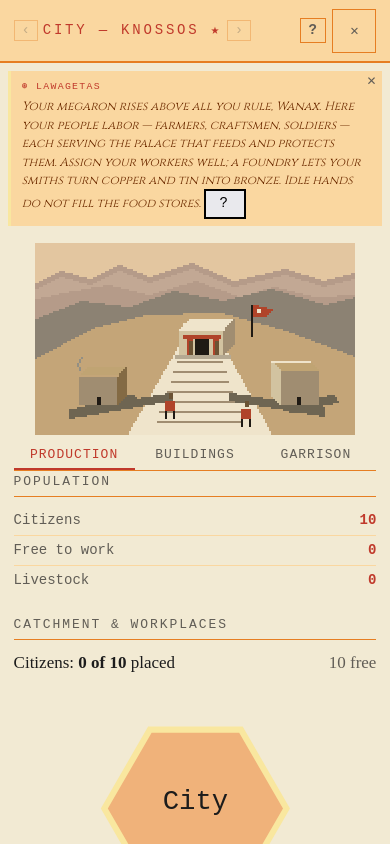
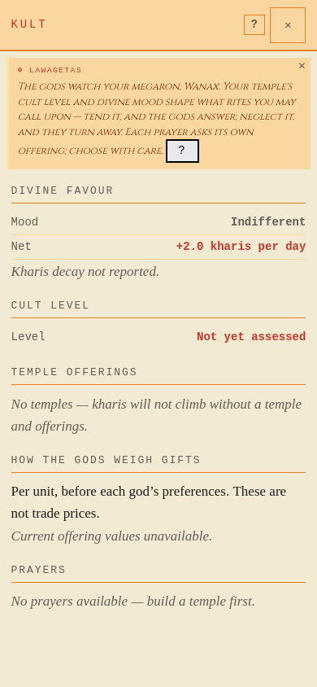
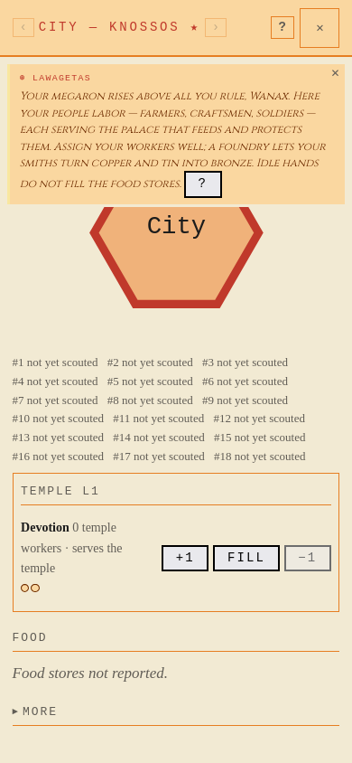
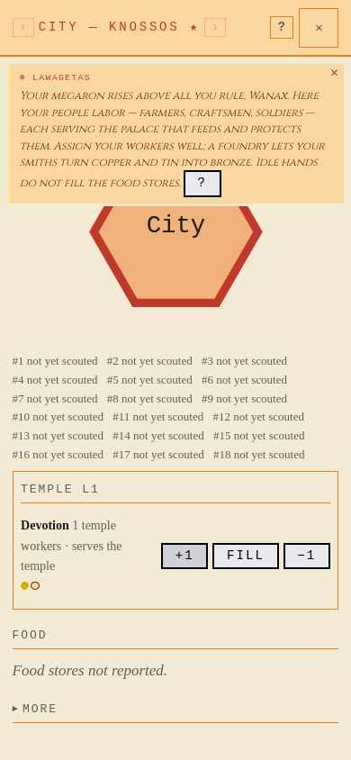
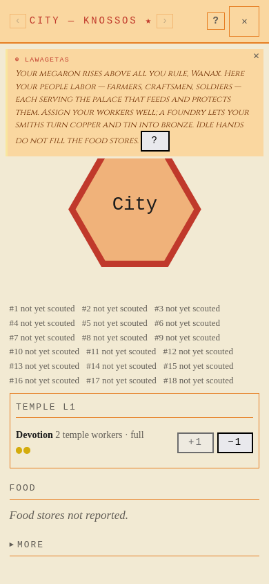
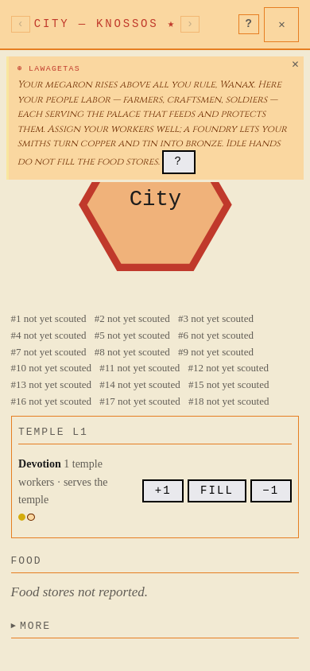
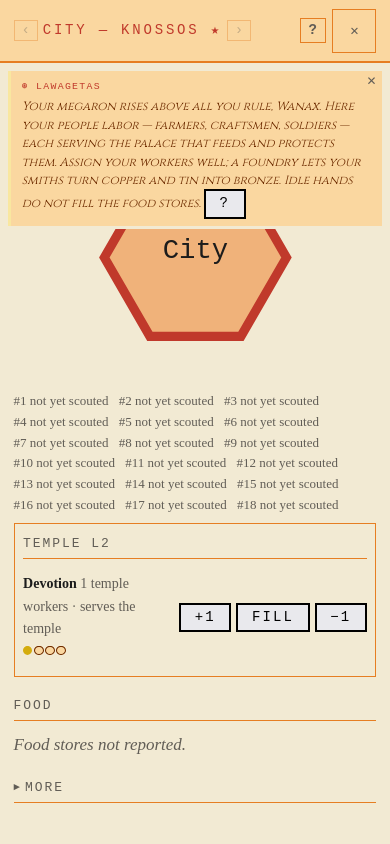
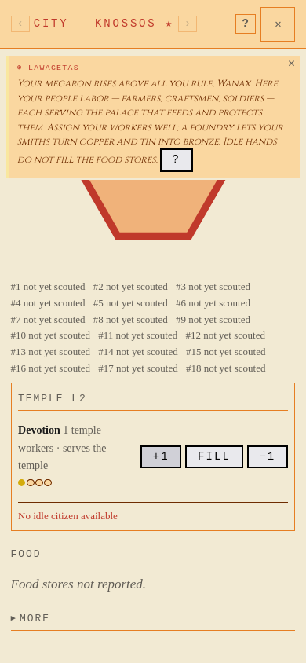
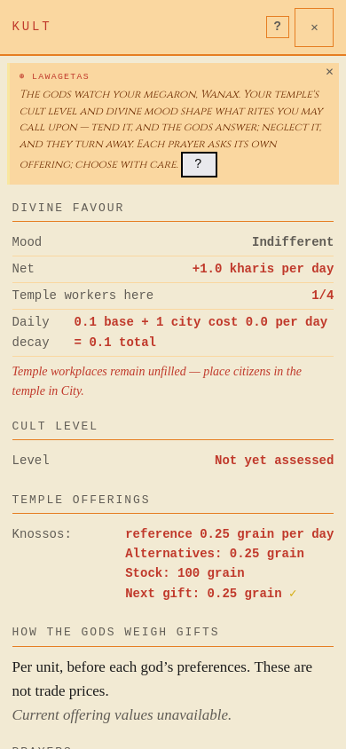
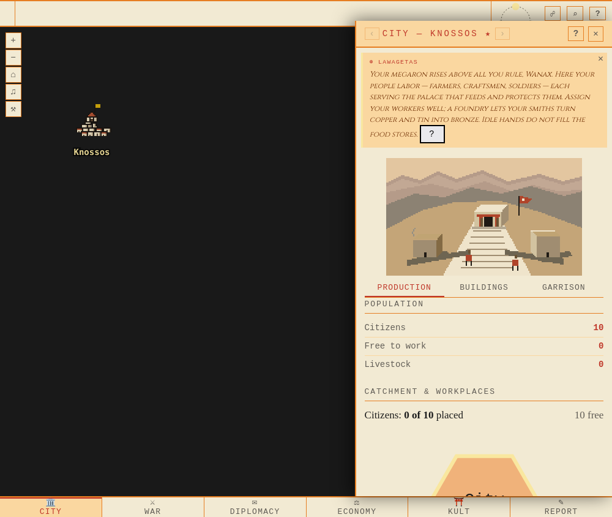
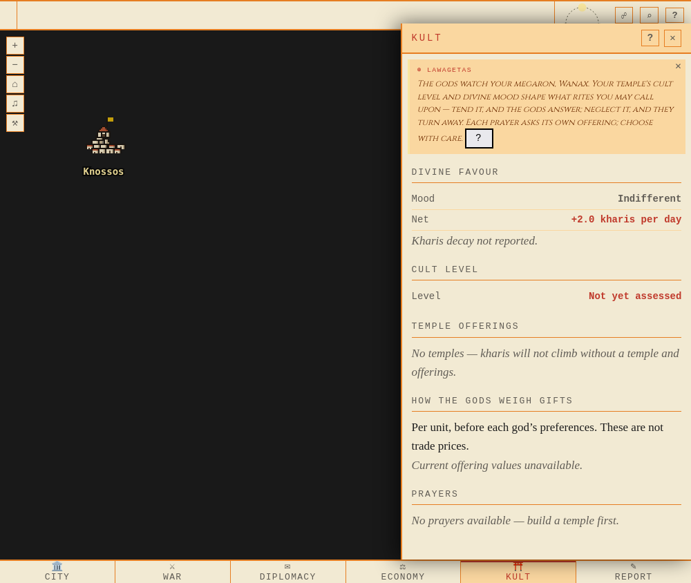
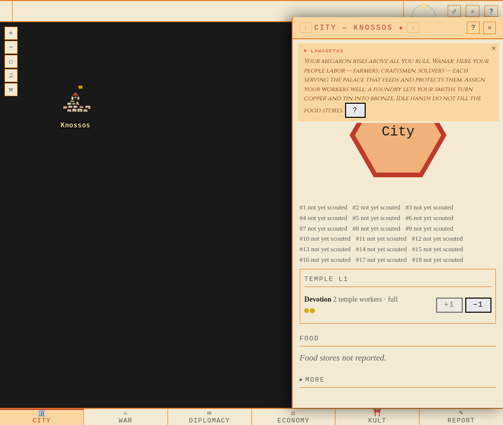
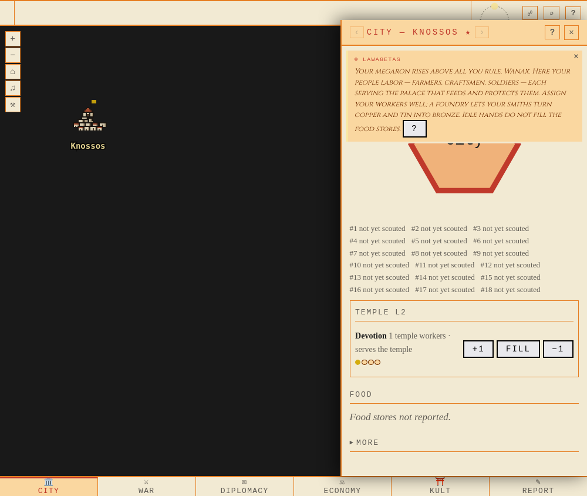
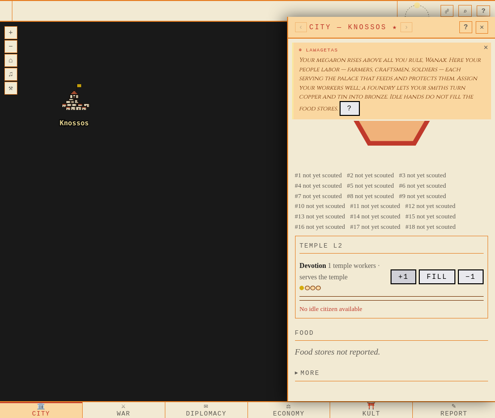
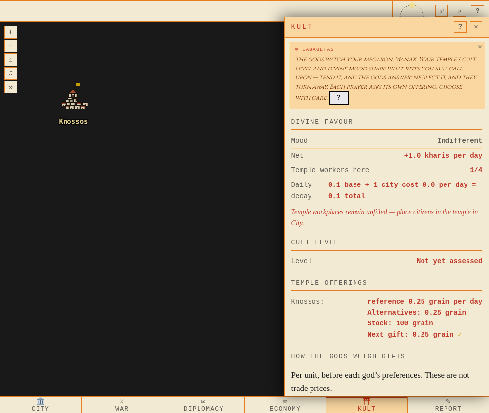